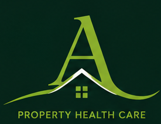

KOLOSVIT ist ein Kommunaler Innovations- & Gemeinschaftsaktivierungspartner — ein Partner, viele Lösungen.
Update (Juni 2026): Der Vorschlag wurde nicht ausgewählt. KOLOSVIT ASBL schätzt die Teilnahme und entwickelt die Initiative weiter.
Update (Juni 2026): Der Vorschlag wurde nicht ausgewählt. KOLOSVIT ASBL schätzt die Teilnahme und entwickelt die Initiative weiter.
KOLOSVIT ASBL ist ein innovativer Verein mit Sitz in Luxemburg, in dem Zukunftstechnologien realen menschlichen Bedürfnissen dienen. Wir glauben, dass digitale Bildung, mentale Resilienz und kulturelle Zugehörigkeit keine Luxusgüter sind — sie sind die Grundlage für ein würdiges Leben in einem neuen Land.
Gegründet von Ukrainern, die in Europa leben, baut KOLOSVIT Brücken zwischen Gemeinschaften, Generationen und Disziplinen. Wir arbeiten an der Schnittstelle von Kultur, Wissenschaft und sozialer Fürsorge — immer geleitet von Menschlichkeit zuerst.
Mindestens 90 % unserer Ressourcen fließen direkt in unsere Mission: Unterstützung vertriebener Menschen, Entwicklung von Bildungsprogrammen und Förderung bedeutungsvoller kultureller Verbindungen in ganz Europa.
„Wir sind durch gemeinsame Werte vereint — Menschlichkeit, Wissen und die Überzeugung, dass jedes Talent zählt. Jeder Mensch, der mit Verlust ankommt, kommt auch mit Gaben an. Unsere Aufgabe ist es, diesen Gaben zu helfen, aufzublühen.“
🖥 Digitale Bildung — Autonome Systeme, KI-Kompetenz und Zukunftsfähigkeiten.
🧠 Neuro-Resilienz — Das ARCH-Programm für kognitive Gesundheit und Stressbewältigung.
🤝 Soziale Integration — Kulturveranstaltungen, Wellness und Gemeinschaftsgefühl.
🌿 Umwelt — Ökologische Verantwortung als bürgerlicher Wert.
CAP · Ein Partner. Mehrere Lösungen.
Die KOLOSVIT Community Activation Platform (CAP) ist ein innovatives Ökosystem, das Gemeinschaftswohl, kommunale Aktivierung, Kulturprogramme und digitale Innovation in einer koordinierten Partnerschaft vereint. Anstatt isolierte Projekte anzubieten, stellt KOLOSVIT Gemeinden, Organisationen und Gemeinschaften eine flexible Plattform zur Verfügung.
Plattform-Module
🏙️ CareterA
Community & Immobilien-Aktivierungssystem — KI-gestützte kommunale Steuerung, Immobilienüberwachung und Gemeinschaftsaktivierung.
💚 ARCH
Gemeinschaftliches Wellbeing-Modul — Prävention, Resilienz und KI-gestützte Wellbeing-Programme.
💎 Pearls of Luxembourg
Gemeinschaftsveranstaltungen & Kultur — inspirierende Geschichten, Fähigkeiten und Verbindungen.
🚁 Digitale Innovation
Drone Academy, KI-Tools, digitale Kompetenzen und Technologiepartnerschaften.
🇪🇺 Europäische Projekte
Unterstützung beim Zugang zu Interreg, CERV, EFRE, ESF und anderen europäischen Förderprogrammen.
Die Mitgliedschaft basiert auf gegenseitigem Austausch. Wir stellen zwei Fragen:
✶ Was suchen Sie?
✶ Was können Sie anbieten?
Wer nur empfangen möchte, ohne beizutragen, tritt diesem Netzwerk nicht bei — das Prinzip einer lebendigen Gemeinschaft.
Unser Partnernetzwerk wächst. Heute umfasst es 53 potenzielle ukrainische Partner — 48 Unternehmen und 5 zivilgesellschaftliche Organisationen — mit Expertise in Fertigung, Technologie, Sozialdiensten und Innovation. Wir expandieren aktiv in Europa und darüber hinaus.
Auf der Grundlage unserer Memoranda können wir helfen, wenn Sie an Fertigungsaktivitäten in der Ukraine interessiert sind.
Im Mai 2026 starteten wir unser erstes Pilotprojekt — Drohnen-Simulator-Training — mit 6 Liftoff-Lizenzen. Wir suchen einen festen Standort und geeignete Ausstattung für unser erstes Trainingsklassenzimmer.
Entwicklungspartner: LuGus Studios (Belgien, Simulationstechnologie) und Velosidron (Memorandum zur ARCH-Entwicklung).
Geschichten · Fähigkeiten · Verbindungen
Pearls of Luxembourg ist eine Initiative von KOLOSVIT ASBL und ihrem CEO Jan Onyx (Künstlername), die bemerkenswerte Menschen durch inspirierende Geschichten, praktisches Wissen und bedeutungsvolle menschliche Verbindungen zusammenbringt.
Luxemburg ist voll von Menschen, deren Geschichten über ihren eigenen Kreis hinaus gehört werden sollten. Pearls schafft den Raum, in dem diese Geschichten geteilt werden — und wo neue Verbindungen entstehen.
Pearls ist nicht nur eine Abendserie. Es ist ein wachsendes Ökosystem — anpassungsfähig an jeden Sektor, jede Gemeinschaft, jede Geschichte.
Jeder Pearls-Abend beginnt mit Menschen und endet mit neuen Verbindungen. Jeder Gast empfiehlt die nächste bemerkenswerte Person. Das Netzwerk wächst organisch.
"Ich suche keine Prominenten. Ich suche Menschen, die Menschen verbinden."
Unsere Vision
Eine langfristige Gemeinschaft, in der Menschen sich gegenseitig inspirieren, von Experten lernen, neue Projekte schaffen, Freundschaften schließen — und manchmal sogar Familien gründen. Verwurzelt in Luxemburg, offen für die Welt.
Denn jede Perle beginnt mit etwas Kleinem — und wächst zu etwas Bleibendem.

Betriebssystem für Gemeinschaften
⚙️ In Entwicklung
CareterA ist eine KI-gestützte Plattform, die Gemeinschafts- und öffentliche Sektorbedürfnisse in messbare Maßnahmen umwandelt — indem Menschen, Orte, Daten und Partner verbunden werden.
← swipe to see full diagram →
KI-Gemeinschaftssteuerung
Echte Bedürfnisse in klügere Entscheidungen verwandeln
CareterA AI analysiert die Bedürfnisse von Menschen und Orten, identifiziert Prioritäten und verbindet sie mit den richtigen Lösungen und Partnern — hilft Gemeinden, Ministerien und öffentlichen Institutionen, datengestützte Entscheidungen zu treffen.
Für: Gemeinden · Regierungen · Ministerien · Öffentliche Institutionen · NGOs · Sozialdienste
Von Erkenntnissen zu Wirkung
🔍 Projekte
Die richtigen Projekte für Menschen und Orte, die sie am meisten brauchen.
🤝 Dienste
Bessere Verbindungen und einfacherer Zugang zu Diensten.
💶 Finanzierung
Effektivere Nutzung öffentlicher und privater Ressourcen.
📈 Wirkung
Messbare Ergebnisse für Gemeinschaften, Orte und Partner.
Mögliche Anwendungen
Warum CareterA
Kommunale Immobilienaktivierung
Kommunales Immobilienaktivierungsprogramm
Untergenutzte kommunale und private Vermögenswerte in aktive Gemeinschaftsräume verwandeln.
KOLOSVIT CareterA unterstützt Gemeinden dabei, die nachhaltige Nutzung ungenutzter Gebäude, öffentlicher Einrichtungen, natürlicher Flächen und kommunaler Infrastruktur zu identifizieren, zu aktivieren und zu koordinieren.
Das Programm kann umfassen:
Flexible Partnerschafts- & Geschäftsmodelle
KOLOSVIT ist überzeugt, dass jede Gemeinde unterschiedliche Bedürfnisse und Kapazitäten hat.
💰 Finanzpartnerschaften
🏛️ Vermögensbasierte Partnerschaften
🤝 Gemeinschaftspartnerschaften
💡 Innovationspartnerschaften
Gemeinschafts-Ökosystem
Ein Ökosystem, in dem alle teilnehmen
CareterA ist nicht nur eine Plattform — es ist ein Betriebssystem für Gemeinschaften. Jeder Teilnehmer schafft entweder Nachfrage oder erfüllt sie. Vom einzelnen Bewohner bis zur Gemeinde, von einer ASBL bis zu einem Unternehmen — alle sind in einem koordinierten Ökosystem verbunden.
🏛️ Öffentlicher Sektor
Gemeinden · Ministerien · Sozialdienste · Arbeitsvermittlung · Bibliotheken
🤝 Zivilgesellschaft
ASBLs · Stiftungen · Freiwilligenorganisationen · Jugend · Veteranen · Kulturverbände
🏘️ Wohngemeinschaften
Co-Livings · Co-Housings · Genossenschaften · Studentenwohnheime · Seniorenwohnen · Sozialwohnen
💼 Unternehmen
Hotels · Restaurants · Co-Workings · Medizinische Zentren · Architekten · Immobilien · Versicherungen
🎓 Bildung
Universitäten · Schulen · Sprachschulen · Berufsbildung · Kinderclubs
❤️ Soziale Versorgung
Seniorenheime · Häusliche Pflege · Tageszentren · Psychologische Zentren · Familienunterstützung
🌱 Gemeinschaften
Integrationsgemeinschaften · Expat-Gruppen · Interessenclubs · Sport · Musik · Gärtnerei
🏠 Immobilieneigentümer
Eigentümerverbände · Verwalter · Vermieter · Bauträger · Eigenheimbesitzer
🌍 Europäische Partner
EU-Programme · Internationale ASBL-Netzwerke · Förderfonds · Sozialinvestoren
Immobilienpflegedienste
Immobilienüberwachung & Pflege
Praktische Inspektions-, Überwachungs- und Pflegedienste für leerstehende und bewohnte Gebäude — öffentlicher, kommunaler und privater Sektor.
Werden Sie Pilotpartner
CareterA befindet sich derzeit in der Entwicklung. Wir suchen Gemeinden, Organisationen und Immobilieneigentümer, die an der gemeinsamen Entwicklung und Pilotierung der Plattform interessiert sind.
KI-Resilienz & Community Hub
⚙️ In Development
ARCH ist ein von KOLOSVIT ASBL entwickeltes Präventions- und Resilienz-Ökosystem. Es vereint KI-gestützte Wellbeing-Tools, Gemeinschaftsprogramme und branchenspezifische Lösungen in einem koordinierten Ansatz — anpassbar an Gemeinden, Organisationen und Einzelpersonen.
ARCH behandelt nicht. ARCH erkennt, informiert und empfiehlt. Es ergänzt — niemals ersetzt — Gesundheitsversorgung, Sozialdienste und klinisches Urteilsvermögen.
⭐ Vorzeigeprogramm
ARCH Community Well-being Ecosystem
Ein modulares, skalierbares Programm, das Gemeinden, Sozialdiensten, Krankenhäusern, Universitäten und Stiftungen hilft, Lebensqualität zu verbessern und Resilienz zu stärken.
Kernmodule
🧓 Gesundes Altern
Unterstützung der Unabhängigkeit und sozialen Teilhabe älterer Menschen.
💻 Digitale Inklusion
Bewohnern hilft, digitale Dienste sicher zu nutzen.
🕊️ Veteranen & Vertriebene
Resilienzaufbau und Integration für kriegsbetroffene Personen.
🤝 Inklusive Gemeinschaft
Barrierefreiheitsprogramme für Menschen mit Behinderungen.
🏛️ Gesunde Gemeindemitarbeiter
Stressprävention und organisatorische Resilienz für Gemeindeteams.
📡 Smart Wellbeing Monitoring
Freiwillige, nicht-medizinische Überwachung mit zertifizierten Wearables.
Für Wen
Gemeinden · Ministerien · Sozialdienste · Krankenhäuser · Seniorenpflege · Universitäten · Stiftungen
Immobilien & Infrastruktur
🏠 CareterA — Immobilienpflege-Ökosystem
Eine praktische Lösung für Gemeinden und Eigentümer: Überwachung leerstehender Immobilien, Droneninspektionen, Unterstützung bei temporärer Nutzung, Solar- und Dachüberwachung, präventive Pflege.
Droneninspektionen, Solarüberwachung und Moosdetektion — bald verfügbar.
Für: Gemeinden · Sozialwohnungen · Versicherungen · Immobilieneigentümer
Kultur & Gemeinschaft
💎 Pearls of Luxembourg
Gemeinschaft durch Kultur, Geschichten und Verbindung aufbauen — zur Förderung von Tourismus, lokaler Wirtschaft und bürgerschaftlichem Engagement.
ARCH passt sich den spezifischen betrieblichen und psychosozialen Herausforderungen jeder Branche an. Im Folgenden Beispiele branchenspezifischer Resilienzlösungen — keine eigenständigen Projekte, sondern angepasste Anwendungen derselben Kernmethodik.
Pilotprogramm · Finanzsektor
ARCH Resilience Hub für Finanzinstitutionen
Das Problem: Compliance-, AML-, Risiko- und Operationsteams arbeiten unter ständiger kognitiver Überlastung — Regulierungsfristen, persönliche Verantwortung und mehrsprachige Hochdruckumgebungen erhöhen das Burnout-Risiko.
Pilotbudgets ab ca. 10.000 € pro Monat. Detaillierter Vorschlag nach Erstgespräch. INFPC-Kofinanzierung (~15%) verfügbar.
Pilotprogramm · Logistik & Transport
ARCH Resilience Hub für Transportbetreiber
Das Problem: Fahrer, Disponenten und Koordinatoren sind chronischer Ermüdung, Schichtarbeit und risikoreichen Entscheidungen ausgesetzt. Die NIS2-Richtlinie klassifiziert Transport als kritische Infrastruktur.
Pilotbudgets ab ca. 10.000–12.000 € pro Monat (Basisversion) / 15–20 Mitarbeiter.
Pilotprogramm · Bildung & Integration
Simulatorbasiertes Training für Jugendliche und Flüchtlinge
Mit Liftoff-Drohnensimulatoren (6 Lizenzen, MoU unterzeichnet) entwickelt ARCH praktische Trainingsprogramme für Jugendliche und Flüchtlinge. Wir bestimmen derzeit den Standort für unser erstes Trainingsklassenzimmer.
Künstliche Intelligenz unterstützt Programmkoordination, anonyme Trendanalyse und evidenzbasierte Entscheidungsfindung — stets als unterstützende Technologie, niemals als Ersatz für klinisches Urteilsvermögen.
Gemeinschaftsinitiative
🐾 Rettungsprogramm — Tierheim, Region Poltawa, Ukraine
ARCH bereitet ein Rettungsprogramm für eine Hundezuchtanlage und ein Tierheim in der Region Poltawa, Ukraine vor. Wir planen Wohltätigkeitsveranstaltungen und laden Mäzene und Organisationen ein, die an der Erhaltung dieser Einrichtung interessiert sind.
Interesse, eine der ersten Pilotorganisationen in Luxemburg zu werden?
Pilotprogramme werden an die Größe der Organisation und die ausgewählten Module angepasst. Detaillierter Vorschlag nach Erstgespräch.
Direktkontakt? 📧 kolosvit@proton.me
Bitte geben Sie in Ihrer Nachricht an: